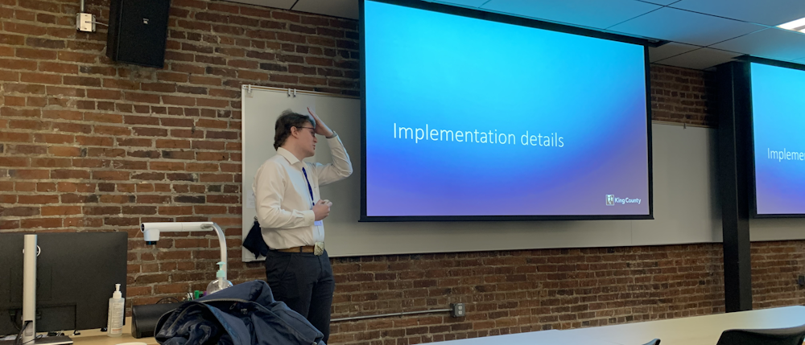

WAGISA 2023
Today I woke up early at 7 AM and drove down to the UW Tacoma campus to present at the WAGISA conference. After a coffee, catching up with a couple other attendees, and watching a presentation on tracking road pavement quality over the course of a decade by the City of Arlington it was my turn.
About a year and a half ago I got a new manager and joined a team working on replacing an existing inventory management system called the Road Assets Editor. As we were building the second version of this app the team took to calling it RAE or rae-rae. The original goal was to offer feature parity with the existing app which had a hard retirement date because it was based on Microsoft’s Silverlight framework.
In the end we far surpassed the old app in every way by automating complex workflows that required updating multiple tables with many-to-many relationships and building better guard rails to prevent users from accidentally entering bad data. Most importantly, we made judicious use of caching HTTP requests both in our back-end API and inside our React components so that we could minimize the latency of clicking on buttons that ran queries and dynamically loaded dropdown menus. This was a marked improvement over the old app that was quite slow to interact with at times.
My two coworkers did their sections of the presentation first and then it was time for me to spill the technical bits. I asked the crowd to raise their hands if they had ever built a custom web map using ESRI’s ArcGIS.js library. Of the 40 something people in the room about 5 raised their hands so I did my best not to belabor the programming and focus on the practical bits that other GIS people might enjoy. It seemed to go well, and we had a fun Q&A session at the end.
You can read more about RAE here:
- Using Next.js and ArcGIS JS to build Geospatial Web Apps
- Cleaning up a .NET 6 Web API Converted from Visual Basic
Custom Software in Local Government
One question that stuck with me was, “What is your plan for updating and maintaining this completely custom web app?” 🤔 I really don’t know, as I understand it that’s a decision that must be negotiated between my management and the customer. With the way the budgeting and project intake process works inside the County we don’t really do any updates unless the customer is paying for a “Phase 2” or there is some kind of break/fix work that needs to be done by the Operations team.
The organization lacks the ability to offer services in the way that you think about software-as-a-service. Once the product is shipped then it is onto the next one, rather than building a team around a product and then maintaining that team for the constant benefit of that product like you might do in an organization with a different structure or with an open-source library.
Software is treated like an underground sewer pipe on a dead-end street. Unless there is a demonstrated need for an improvement in the quality of the service or an expansion of the capacity, we leave it alone until it fails. At which point we start over from the top by rediscovering and defining the needs of the business that the old broken app was built to support. This is not ideal, but it may be the best we can do in a system built around a two-year budgeting cycle.